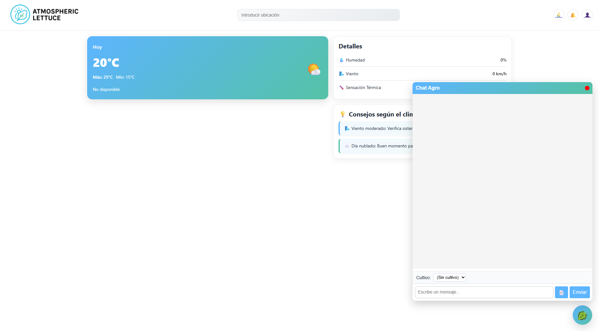
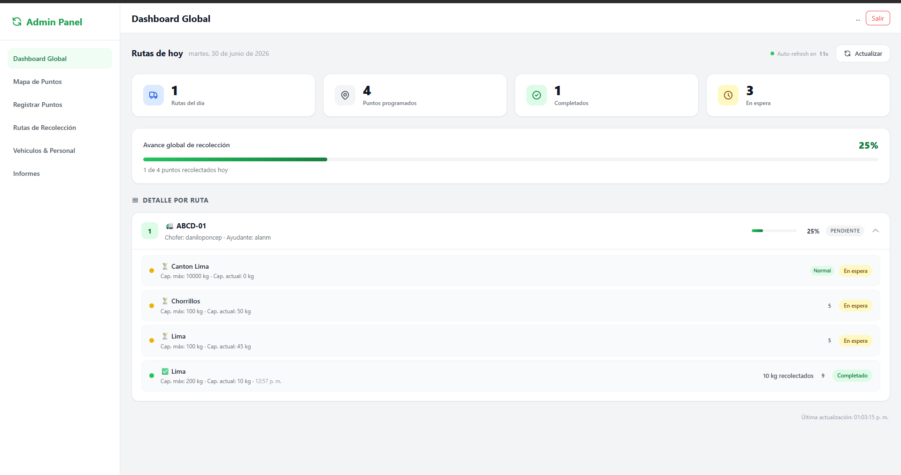
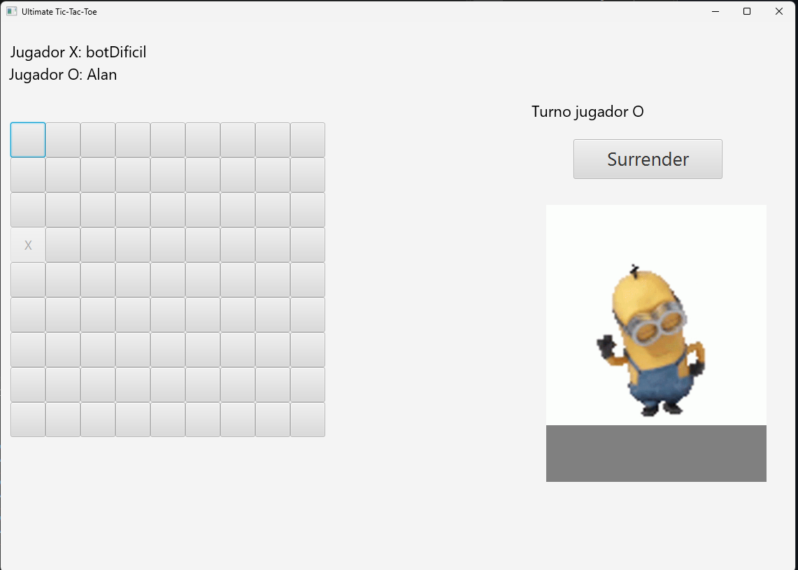

AtmosphericLettuce
Sistema de gestión agrícola integrado con IA para la detección temprana de enfermedades en cultivos.
Hola, soy
Estudiante de Ing. Civil en Computación
Universidad de Talca
Soy un desarrollador backend apasionado por la planificación y el desarrollo de sistemas integrados, la automatización y la arquitectura de software. Me entusiasma enormemente explorar la intersección entre la tecnología y la innovación práctica, especialmente en áreas como la inteligencia artificial aplicada a la agricultura y la medicina. Disfruto diseñar soluciones robustas y eficientes que conecten el software con el mundo real y buscando siempre optimizar procesos con ayuda de la inteligencia artificial.
Actualmente curso el tercer año de Ingeniería Civil en Computación en la Universidad de Talca. A lo largo de mi formación, he consolidado mis habilidades técnicas y metodológicas liderando proyectos como Scrum Master y diseñador-desarrollador de plataformas complejas como AtmosphericLettuce, un sistema de gestión agrícola integrado con IA para la detección de enfermedades. Desde la optimización de algoritmos como Minimax en proyectos interactivos hasta la implementación de flujos de trabajo ágiles en equipos de desarrollo, he aprendido a valorar la estructura, la escalabilidad y la organización en cada línea de código.
Fuera del desarrollo dedico mis tiempos libres a mi hobbies, explorando vida silvestre local, haciendo ejercició fisico, jugar videojuegos y sobre todo compartir tiempo de calidad con mi familia.

Sistema de gestión agrícola integrado con IA para la detección temprana de enfermedades en cultivos.

Aplicación multiplataforma, utilizable en dispositivos IOS, Android y Navegadores, enfocada en el reciclaje y reducción de huella de carbono.

Implementación del algoritmo Minimax en un juego de super-tik-tak-toe.